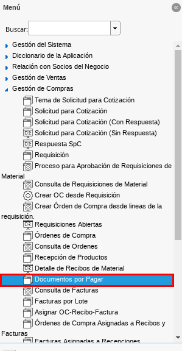
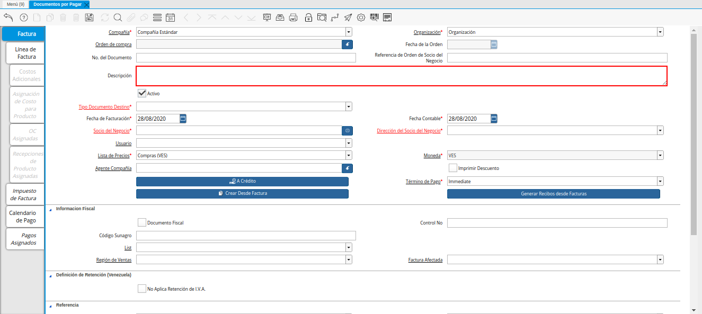
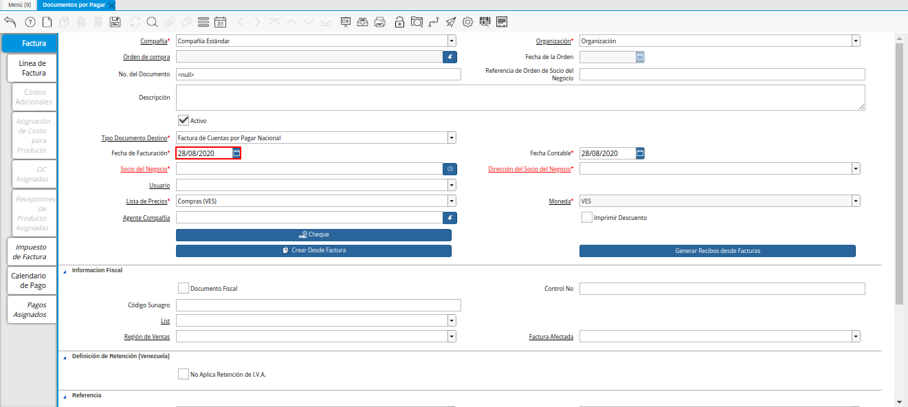
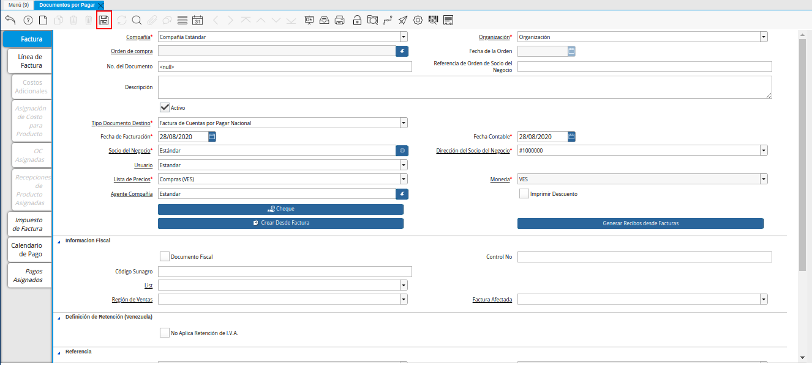

Crear Factura desde Orden de Compra
Ubique en el menú de ADempiere la carpeta “Gestión de Compras”, luego seleccione la ventana “Documentos por Pagar”, adjunto imagen para referencia.

Imagen 1. Menú de ADempiere
Podrá visualizar la ventana “Documentos por Pagar”, con todos los registros de documentos por pagar que se encuentran en ADempiere.
Imagen 2. Ventana Documentos por Pagar

Seleccione el icono “Registro Nuevo”, ubicado en la barra de herramientas de ADempiere para crear un nuevo registro.
Imagen 3. Icono Registro Nuevo de la Ventana Documentos por Pagar
Seleccione en el campo “Organización”, la organización para la cual se encuentra realizando el documento por pagar.
Imagen 4. Campo Organización de la Ventana Documentos por Pagar desde Orden de Compra
Introduzca en el campo “No. del Documento”, el número de documento correspondiente al registro que se encuentra realizando.
Imagen 5. Campo No del Documento de la Ventana Documentos por Pagar desde Orden de Compra
Note
Si no es ingresado ningún valor en este campo, ADempiere tomará el número de secuencia establecido para para el tipo de documento seleccionado.
Introduzca en el campo “Descripción”, una breve descripción con respecto al documento que se encuentra realizando.

Imagen 6. Campo Descripción de la Ventana Documentos por Pagar desde Orden de Compra
Seleccione el tipo de documento a generar en el campo “Tipo de Documento Destino”, la selección de este define el comportamiento del documento que se esta elaborando, dicho comportamiento se encuentra explicado en el documento Tipo de Documento elaborado por ERPyA.
Imagen 7. Campo Tipo de Documento Destino de la Ventana Documentos por Pagar desde Orden de Compra
Seleccione en el campo “Fecha de Facturación”, la fecha que posee el documento por pagar en físico.

Imagen 8. Campo Fecha de Facturación de la Ventana Documentos por Pagar desde Orden de Compra
Seleccione en el campo “Fecha Contable”, la fecha en la cual se encuentra realizando el registro del documento.
Imagen 9. Campo Fecha Contable de la Ventana Documentos por Pagar desde Orden de Compra
Seleccione en el campo “Socio del Negocio”, el socio del negocio proveedor por el cual es realizado el documento por pagar.
Imagen 10. Campo Socio del Negocio de la Ventana Documentos por Pagar desde Orden de Compra
Podrá visualizar en el campo “Dirección del Socio del Negocio”, la dirección de localización del socio del negocio seleccionado anteriormente.
Imagen 11. Campo Dirección del Socio del Negocio de la Ventana Documentos por Pagar desde Orden de Compra
De igual manera, podrá visualizar en el campo “Usuario”, el usuario dentro de ADempiere del socio del negocio seleccionado.
Imagen 12. Campo Usuario de la Ventana Documentos por Pagar desde Orden de Compra
Seleccione en el campo “Lista de Precios”, la lista de precios utilizada para el documento por pagar que se encuentra realizando.
Imagen 13. Campo Lista de Precios de la Ventana Documentos por Pagar desde Orden de Compra
Podrá visualizar en el campo “Moneda”, la moneda definida para la lista de precios seleccionada anteriormente.
Imagen 14. Campo Moneda de la Ventana Documentos por Pagar desde Orden de Compra
Seleccione en el campo “Agente Compañía”, el agente comercial relacionado con el documento por pagar que se encuentra realizando.
Imagen 15. Campo Agente Compañía de la Ventana Documentos por Pagar desde Orden de Compra
Seleccione el checklist “Imprimir Descuento”, para imprimir el descuento en la factura y la orden asociada al documento por pagar que se encuentra realizando.
Imagen 16. Checklist Imprimir Descuento de la Ventana Documentos por Pagar desde Orden de Compra
Seleccione el icono “Guardar Cambios”, ubicado en la barra de herramientas de ADempiere, para guardar el registro de los campos de la ventana “Documentos por Pagar”.

Imagen 17. Icono Guardar Cambios de la Ventana Documentos por Pagar desde Orden de Compra
Seleccione la opción “Crear Desde Factura”, para crear el documento por pagar desde una orden de compra.
Imagen 18. Opción Crear Desde Factura de la Ventana Documentos por Pagar desde Orden de Compra
Podrá visualizar la ventana “Crear Desde una Orden/ADM/Factura/Recepción en una Factura”, con el campo “Crear Desde Tipo” y la opción “Conenzar Búsqueda”, para filtrar de búsqueda según lo que sea seleccionado en dicho campo.
Imagen 19. Ventana Crear Desde una Orden ADM Factura Recepción en una Factura
Seleccione en el campo “Crear Desde Tipo”, la opción “Orden”, para crear el documento por pagar desde una orden de compra.
Imagen 20. Campo Crear Desde Tipo de la Ventana Crear Desde una Orden ADM Factura Recepción en una Factura
Al seleccionar la opción “Orden”, se habilita el campo “Orden de Venta”, para seleccionar la orden de compra desde la cual se requiere crear el documento por pagar.
Imagen 21. Campo Orden de Venta de la Ventana Crear Desde una Orden ADM Factura Recepción en una Factura
Seleccione la opción “Comenzar Búsqueda”, para realizar la búsqueda de los registros en ADempiere según lo seleccionado anteriormente.
Imagen 22. Opción Comenzar Búsqueda de la Ventana Crear Desde una Orden ADM Factura Recepción en una Factura
Seleccione el registro de la orden de compra desde la cual requiere crear el documento por pagar que se encuentra realizando.
Imagen 23. Selección de Orden de Compra en la Ventana Crear Desde una Orden ADM Factura Recepción en una Factura
Seleccione la opción “OK”, para cargar a la ventana “Documento por Pagar”, la información de la orden de compra seleccionada.
Imagen 24. Opción OK de la Ventana Crear Desde una Orden ADM Factura Recepción en una Factura
El proceso regresa a la ventana “Documentos por Pagar”, donde se debe seleccionar el icono “Refrescar”, ubicado en la barra de herramientas de ADempiere, para actualizar los campos en dicha ventana y sean visualizados los datos cargados desde el proceso anteriormente explicado.
Imagen 25. Icono Refrecar de la Ventana Documentos por Pagar desde Orden de Compra
Podrá visualizar los datos de la orden de compra cargados a la ventana “Documentos por Pagar”.
Imagen 26. Datos de la Orden de Compra en la Ventana Documentos por Pagar desde Orden de Compra
Sin embargo, puede seleccionar la pestaña “Línea de Factura”, para visualizar los productos que contiene la orden de compra seleccionada.
Imagen 27. Pestaña Línea de Factura de la Ventana Documentos por Pagar desde Orden de Compra
Seleccione la pestaña principal “Factura”, para ubicar la opción “Completar”, en la parte inferior derecha del documento.
Imagen 28. Pestaña Principal Factura de la Ventana Documentos por Pagar desde Orden de Compra
Seleccione la opción “Completar”, para completar el registro realizado en la ventana “Documentos por Pagar”.
Imagen 29. Opción Completar de la Ventana Documentos por Pagar desde Orden de Compra
Seleccione la acción “Completar” y la opción “OK”, para culminar el procedimiento.
Imagen 30. Acción Completar y Opción OK de la Ventana Documentos por Pagar desde Orden de Compra